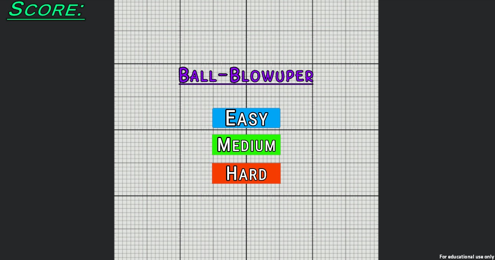
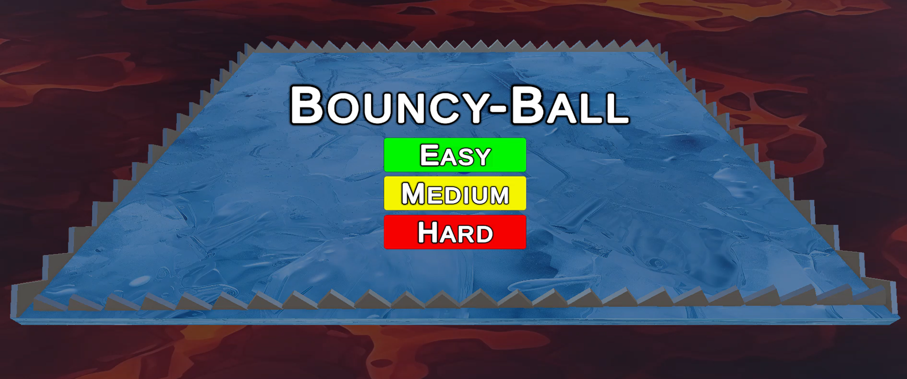
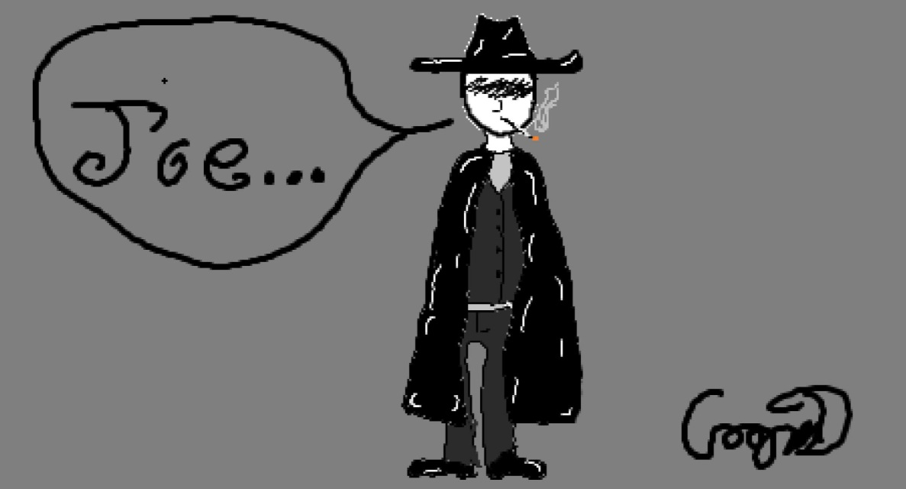
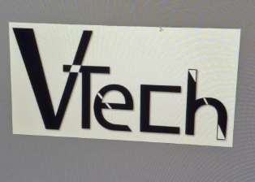

Cooper Donophan --- Projects
Projects
Here are some of my Game Projects.
Ball-Blowupper
A Game I made following a Unity tutorial which has built off of most of what I have done before hand with unity. This shows my ability to understand physics based gameplay in a project.

Bouncy Ball
My own personal project that is currently in development In Unity Engine. The goal is to knock enemy's away while avoiding the spikes on the side. This shows all the lessons I've been tought(so far).

Here are some of my Digital Art pieces.
A drawing I made of a gunslinger.
This is just a little art I made in my Digital Imaging class at my High school. This shows my hand-drawing ability, I'm not stuck to a computer all day. For this I used my tablet with a pen.

Logo made for my friend.
My friend, Carter asked me if I coould design a logo for his clothing brand "VTech" in Adobe Illustrator. He wanted something simple, but powerful, he ended up loving what I made. This shows that I am able to make something that satasfies the customer.

Logo made for my Coding class at James Rumsey Technical Institute.
My coding teacher told my class to make a logo design for a t-shirt without using more than three colors, I tried to only use two. Rather than an Adobe product, I made this in Canva. This is an example of how I challenge myself and still come up with great art.
Back to Portfolio!